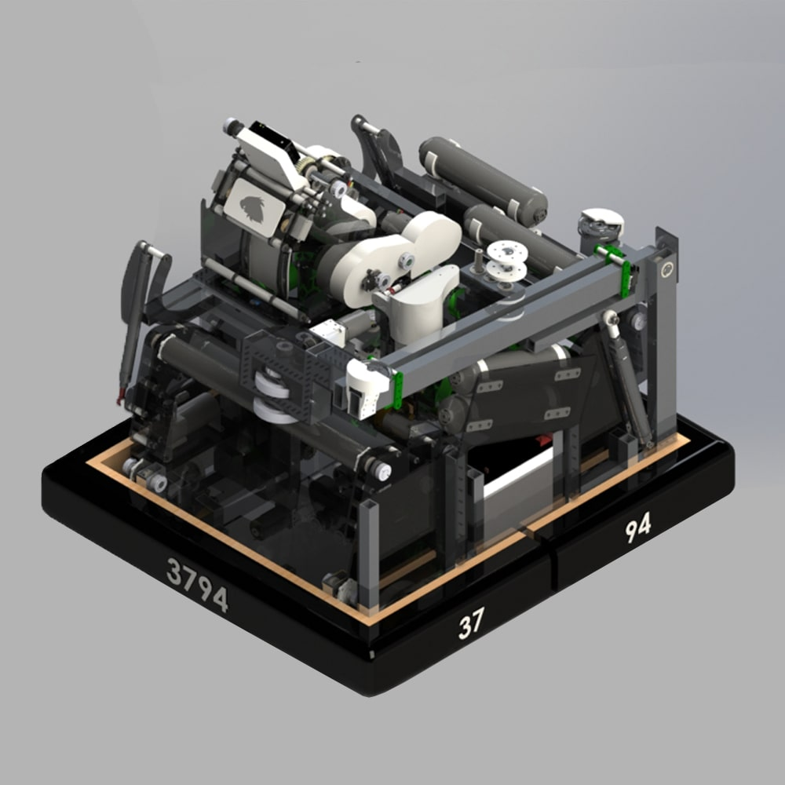

What is it about?

Due to the pandemic, it was known that the FRC 2021 robotics competition would repeat the previous year's challenge as most teams didn't even have the opportunity to compete. With this in mind and hoping that the pandemic would end, I designed a robot that focused on higher production levels than in previous years. I drew inspiration from teams that I had seen compete before the events were canceled in 2020.
While this robot was never built due to the ongoing pandemic, it would have featured the following characteristics:
- Differential chassis with 6 traction wheels.
- Dual intake to collect balls from two sides.
- Gravity-based indexer and floor rollers.
- Pre-shooter to accelerate the balls before reaching the shooter.
- Shooter with two Falcon motors and both top and bottom wheels spinning at the same tangential speed.
- Adjustable angle using two servo motors.
- "Limelight" camera for automatic shooting adjustment.
- Turret attached to the shooter to adjust the shot at any angle.
- Retractable elevator to keep the robot compact.
- Slider on the top of the elevator to balance it on the hanging platform.
- Retractable color-sensing wheels to earn more points by rotating a colored disc to a specific position.
For this robot, I created a technical brochure that provides a detailed and visual description of each part of the robot. The design can be found on my GrabCAD.